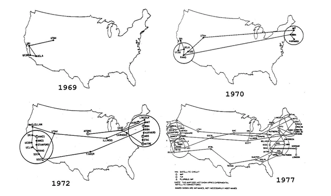
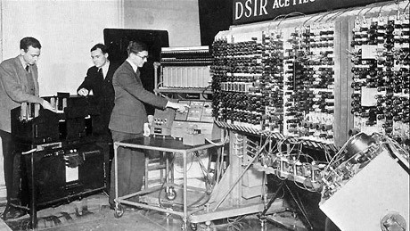
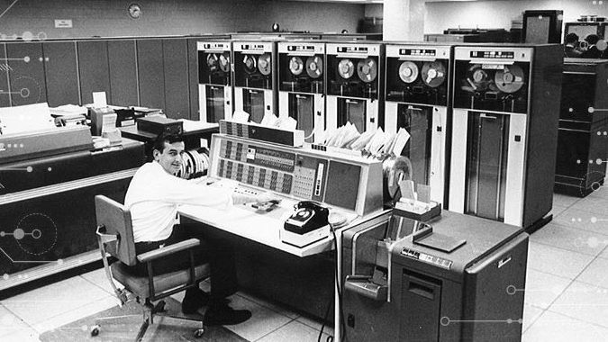

At the University of California, Los Angeles, Charley Kline typed the word "LOGIN" at around nine p.m. on October 29, 1969. The command went through interface computers built by Cambridge's BBN Technologies (formerly Bolt, Beranek, and Newman) on its way to Kline's counterpart Bill Duvall, at SRI International (then known as Stanford Research Institute) in Menlo Park, California. The first letters, "LO", came through to the SRI machine before the system crashed. The minor setback would be fixed quickly, and the connection was fully in place by 10:30 p.m. The very first data had been sent between two nodes of the ARPANET, a key precursor to the Internet.
"The ARPANET was built to permit ARPA (U.S. Department of Defense Advanced Research Projects Agency)-supported computer researchers to share common interests without geographical limits," said Bob Taylor, who helped conceive and fund the ARPANET in the mid 1960s as head of computing research at ARPA [1]
Expansion of ARPANETComputers were added quickly to the ARPANET during the following years, and work proceeded on completing a functionally complete Host-to-Host protocol and other network software. In December 1970 the Network Working Group (NWG) working under S. Crocker finished the initial ARPANET Host-to-Host protocol, called the Network Control Protocol (NCP). As the ARPANET sites completed implementing NCP during the period 1971-1972, the network users finally could begin to develop applications. |
First public demonstrationIn October 1972, Kahn organized a large, very successful demonstration of the ARPANET at the International Computer Communication Conference (ICCC). This was the first public demonstration of this new network technology to the public. It was also in 1972 that the initial “hot” application, electronic mail, was introduced. In March Ray Tomlinson at BBN wrote the basic email message send and read software, motivated by the need of the ARPANET developers for an easy coordination mechanism. In July, Roberts expanded its utility by writing the first email utility program to list, selectively read, file, forward, and respond to messages. From there email took off as the largest network application for over a decade. This was a harbinger of the kind of activity we see on the World Wide Web today, namely, the enormous growth of all kinds of “people-to-people” traffic. [2] |
[1]"The Computer History Museum, SRI International, and BBN Celebrate the 40th Anniversary of First ARPANET Transmission, Precursor to Today's Internet".
[2]"origins of the internet"
https://www.internetsociety.org/internet/history-internet/brief-history-internet/